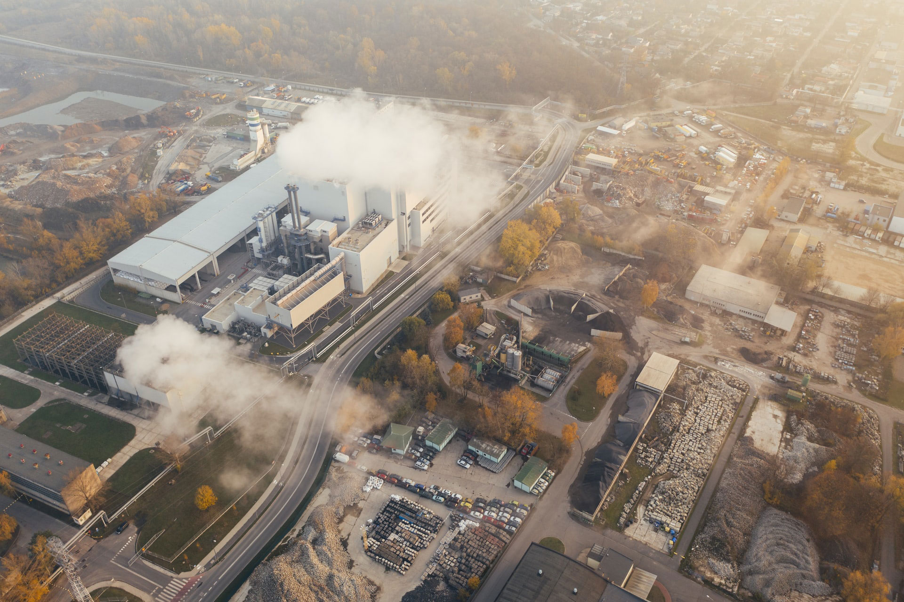
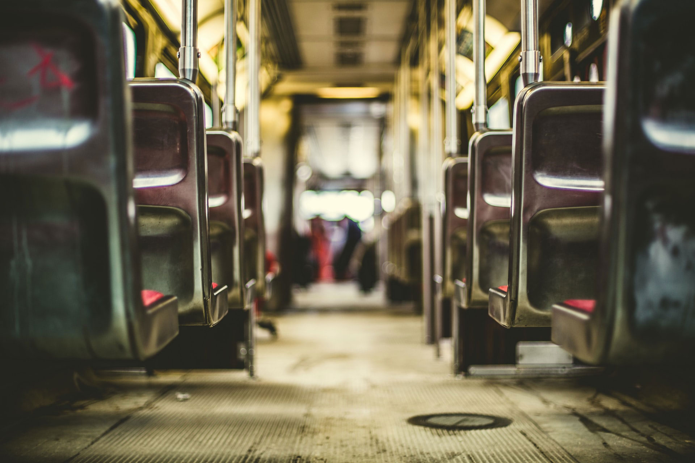
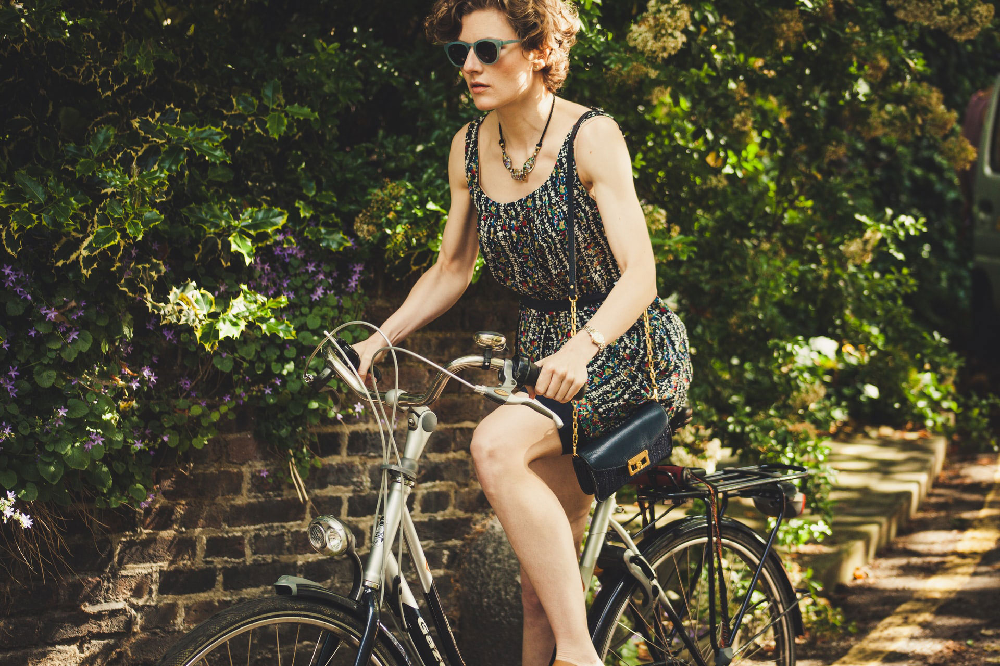

Transportation's Effect on Carbon Footprint
What can you do?
Driving large personal cars and short flights
It can greatly increase your carbon footprint to drive a large personal car, and make unecessary flights. Carpooling, public transportation where available, and use of bicycles are more planet-friendly transportation options.
Public transportation
It can greatly increase your carbon footprint to drive a large personal car, and make unecessary flights. Carpooling, public transportation where available, and use of bicycles are more planet-friendly transportation options.
Bicycle use
It can greatly increase your carbon footprint to drive a large personal car, and make unecessary flights. Carpooling, public transportation where available, and use of bicycles are more planet-friendly transportation options.
Choose to own a bike instead of a car if possible!